감정평가사-1차-2교시 (2021-04-24 기출문제)
1과목: 감정평가관계법규
1. 국토의 계획 및 이용에 관한 법령상 기반시설과 그 해당시설의 연결로 옳지 않은 것은?
- 공간시설 – 연구시설
- 방재시설 – 유수지
- 유통 • 공급시설 - 시장
- 보건위생시설 – 도축장
- 교통시설 - 주차장
(정답률: 알수없음)

2. 국토의 계획 및 이용에 관한 법령상 국토교통부장관이 단독으로 광역도시계획을 수립하는 경우는?
- 시 • 도지사가 협의를 거쳐 요청하는 경우
- 광역계획권을 지정한 날부터 3년이 지날 때까지 관할 시 • 도지사로부터 광역도시계획의 승인 신청이 없는 경우
- 광역계획권이 둘 이상의 시 • 도의 관할 구역에 걸쳐 있는 경우
- 광역계획권이 같은 도의 관할 구역에 속하여 있는 경우
- 중앙행정기관의 장이 요청하는 경우
(정답률: 알수없음)
3. 국토의 계획 및 이용에 관한 법령상 도시 • 군기본계획에 관한 설명으로 옳은 것은?
- 특별시장•광역시장•특별자치시장•도지사•특별자치도지사는 관할 구역에 대하여 도시 • 군기본계획을 수립하여야 한다.
- 시장 또는 군수가 도시 • 군기본계획을 변경하려면 지방의회의 승인을 받아야 한다.
- 도시 • 군기본계획을 변경하기 위하여 공청회를 개최한 경우, 공청회에서 제시된 의견이 타당하다고 인정하더라도 도시 • 군기본계획에 반영하지 않을 수 있다.
- 도시 • 군기본계획 입안일부터 5년 이내에 토지적성평가를 실시한 경우에는 도시 • 군기본계획의 수립을 위한 기초조사의 내용에 포함되어야 하는 토지적성평가를 하지 아니할 수 있다.
- 도지사는 시장 또는 군수가 수립한 도시 • 군기본계획에 대하여 관계 행정기관의 장과 협의하였다면, 지방도시계획위원회의 심의를 거치지 아니하고 승인할 수 있다.
(정답률: 알수없음)
4. 국토의 계획 및 이용에 관한 법령상 개발행위에 대한 도시계획위원회의 심의를 거쳐야 하는 사항에 관한 조문의 일부이다. ( )에 들어갈 내용으로 각각 옳은 것은?
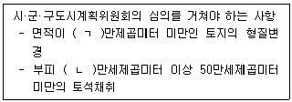
- ㄱ: 30, ㄴ: 3
- ㄱ: 30, ㄴ: 5
- ㄱ: 30, ㄴ: 7
- ㄱ: 50, ㄴ: 3
- ㄱ: 50, ㄴ: 5
(정답률: 알수없음)
5. 국토의 계획 및 이용에 관한 법령상 용도지역·용도지구·용도구역에 관한 설명으로 옳지 않은 것은?
- 제2종일반주거지역은 중층주택을 중심으로 편리한 주거환경을 조성하기 위하여 필요한 지역을 말한다.
- 시•도지사는 대통령령으로 정하는 주거지역 • 공업지역 • 관리지역에 복합용도지구를 지정할 수 있다.
- 경관지구는 자연경관지구, 시가지경관지구, 특화경관지구로 세분할 수 있다.
- 관리지역에서「농지법」에 따른 농업진흥지역으로 지정 • 고시된 지역은 농림지역으로 결정 • 고시된 것으로 본다.
- 시가화조정구역의 지정에 관한 도시 • 군관리계획의 결정은 시가화 유보기간이 끝난 날부터 그 효력을 잃는다.
(정답률: 알수없음)
6. 국토의 계획 및 이용에 관한 법령상 도시 • 군계획시설 부지의 매수 청구에 관한 설명으로 옳은 것을 모두 고른 것은? (단, 조례는 고려하지 않음)
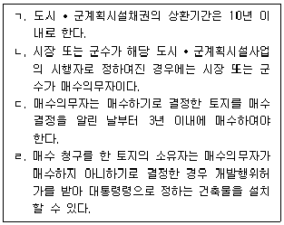
- ㄱ, ㄴ
- ㄱ, ㄷ
- ㄷ, ㄹ
- ㄱ, ㄴ, ㄹ
- ㄴ, ㄷ, ㄹ
(정답률: 알수없음)
7. 국토의 계획 및 이용에 관한 법령상 사업시행자가 공동구를 설치하여야 하는 지역등에 해당하지 않는 것은? (단, 지역등의 규모는 200만제곱미터를 초과함)
- 「지역 개발 및 지원에 관한 법률」에 따른 지역개발사업구역
- 「도시개발법」에 따른 도시개발구역
- 「경제자유구역의 지정 및 운영에 관한 특별법」에 따른 경제자유구역
- 「도시 및 주거환경정비법」에 따른 정비구역
- 「도청이전을 위한 도시건설 및 지원에 관한 특별법」에 따른 도청이전신도시
(정답률: 알수없음)
8. 국토의 계획 및 이용에 관한 법령상 지구단위계획에 관한 설명이다. ( )에 들어갈 내용으로 각각 옳은 것은?
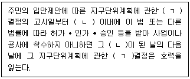
- ㄱ: 도시 • 군기본계획, ㄴ: 3년
- ㄱ: 도시 • 군기본계획, ㄴ: 5년
- ㄱ: 도시 • 군관리계획, ㄴ: 1년
- ㄱ: 도시 • 군관리계획, ㄴ: 3년
- ㄱ: 도시 • 군관리계획, ㄴ: 5년
(정답률: 알수없음)
9. 국토의 계획 및 이용에 관한 법령상 용도지역안에서의 건폐율의 최대한도가 가장 큰 것은? (단, 조례 및 기타 강화·완화조건은 고려하지 않음)
- 제1종일반주거지역
- 일반상업지역
- 계획관리지역
- 준공업지역
- 준주거지역
(정답률: 알수없음)
10. 국토의 계획 및 이용에 관한 법령상 조례로 따로 정할 수 있는 것에 해당하지 않는 것은? (단, 조례에 대한 위임은 고려하지 않음)
- 도시 • 군계획시설의 설치로 인하여 토지 소유권 행사에 제한을 받는 자에 대한 보상에 관한 사항
- 도시 • 군관리계획 입안시 주민의 의견 청취에 필요한 사항
- 대도시 시장이 지역여건상 필요하여 정하는 용도지구의 명칭 및 지정목적에 관한 사항
- 기반시설부담구역별 특별회계 설치에 필요한 사항
- 공동구의 점용료 또는 사용료 납부에 관한 사항
(정답률: 알수없음)
11. 국토의 계획 및 이용에 관한 법령상 과태료 부과 대상에 해당하는 것은?
- 도시 • 군관리계획의 결정이 없이 기반시설을 설치한 자
- 공동구에 수용하여야 하는 시설을 공동구에 수용하지 아니한 자
- 정당한 사유 없이 지가의 동향 및 토지거래의 상황에 관한 조사를 방해한 자
- 지구단위계획에 맞지 아니하게 건축물을 건축하거나 용도를 변경한 자
- 기반시설설치비용을 면탈·경감하게 할 목적으로 거짓 자료를 제출한 자
(정답률: 알수없음)
12. 국토의 계획 및 이용에 관한 법령상 국토교통부장관이 지구단위계획의 수립기준을 정할 때 고려하여야 하는 사항으로 옳지 않은 것은?
- 도시지역 외의 지역에 지정하는 지구단위계획구역은 해당 구역의 중심기능에 따라 주거형, 산업 • 유통형, 관광 • 휴양형 또는 복합형 등으로 지정 목적을 구분할 것
- 「택지개발촉진법」에 따라 지정된 택지개발지구에서 시행되는 사업이 끝난 후 10년이 지난 지역에 수립하는 지구단위계획의 내용 중 건축물의 용도제한의 사항은 해당 지역에 시행된 사업이 끝난 때의 내용을 유지함을 원칙으로 할 것
- 「문화재보호법」에 따른 역사문화환경 보존지역에서 지구단위계획을 수립하는 경우에는 문화재 및 역사문화환경과 조화되도록 할 것
- 건폐율 • 용적률 등의 완화 범위를 포함하여 지구단위계획을 수립하도록 할 것
- 개발제한구역에 지구단위계획을 수립할 때에는 개발제한구역의 지정 목적이나 주변환경이 훼손되지 아니하도록 하고, 「개발제한구역의 지정 및 관리에 관한 특별조치법」을 우선하여 적용할 것
(정답률: 알수없음)
13. 국토의 계획 및 이용에 관한 법령상 도시 • 군관리계획에 해당하는 것을 모두 고른 것은?
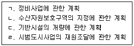
- ㄱ, ㄷ
- ㄴ, ㄹ
- ㄱ, ㄴ, ㄷ
- ㄴ, ㄷ, ㄹ
- ㄱ, ㄴ, ㄷ, ㄹ
(정답률: 알수없음)
14. 부동산 가격공시에 관한 법령상 개별공시지가에 관한 설명으로 옳지 않은 것은?
- 시장• 군수 또는 구청장은 개별공시지가에 토지가격비준표의 적용에 오류가 있음을 발견한 때에는 지체 없이 이를 정정하여야 한다.
- 표준지로 선정된 토지에 대하여 개별공시지가를 결정 • 공시하지 아니하는 경우에는 해당 토지의 표준지공시지가를 개별공시지가로 본다.
- 개별공시지가에 이의가 있는 자는 그 결정 • 공시일부터 60일 이내에 서면 또는 구두로 이의를 신청할 수 있다.
- 개별공시지가의 결정 • 공시에 소요되는 비용 중 국고에서 보조할 수 있는 비용은 개별공시지가의 결정 • 공시에 드는 비용의 50퍼센트 이내로 한다.
- 개별공시지가의 단위면적은 1제곱미터로 한다.
(정답률: 알수없음)
15. 부동산 가격공시에 관한 법령상 표준지공시지가에 관한 설명으로 옳지 않은 것은?
- 국토교통부장관은 표준지를 선정할 때에는 일단(一團)의 토지 중에서 해당 일단의 토지를 대표할 수 있는 필지의 토지를 선정하여야 한다.
- 국토교통부장관은 표준지공시지가를 공시하기 위하여 표준지의 가격을 조사•평가할 때에는 해당 토지 소유자의 의견을 들어야 한다.
- 국토교통부장관은 표준지공시지가의 조사• 평가액 중 최고평가액이 최저평가액의 1.3배를 초과하는 경우에는 해당 감정평가법인등에게 조사 • 평가보고서를 시정하여 다시 제출하게 할 수 있다.
- 감정평가법인등은 표준지공시지가에 대하여 조사• 평가보고서를 작성하는 경우에는 미리 해당 표준지를 관할하는 시 • 도지사 및 시장 • 군수 • 구청장의 의견을 들어야 한다.
- 표준지공시지가는 감정평가법인등이 제출한 조사•평가보고서에 따른 조사•평가액의 최저치를 기준으로 한다.
(정답률: 알수없음)
16. 부동산 가격공시에 관한 법령상 표준주택가격의 공시사항에 포함되어야 하는 것을 모두 고른 것은?
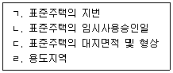
- ㄱ, ㄴ
- ㄷ, ㄹ
- ㄱ, ㄴ, ㄷ
- ㄱ, ㄷ, ㄹ
- ㄱ, ㄴ, ㄷ, ㄹ
(정답률: 알수없음)
17. 감정평가 및 감정평가사에 관한 법령상 감정평가사에 관한 설명으로 옳지 않은 것은?
- 감정평가사 결격사유는 감정평가사 등록의 거부사유와 취소사유가 된다.
- 등록한 감정평가사는 5년마다 그 등록을 갱신하여야 한다.
- 등록한 감정평가사가 징계로 감정평가사 자격이 취소된 후 5년이 지나지 아니한 경우 국토교통부장관은 그 등록을 취소할 수 있다.
- 감정평가사는 감정평가업을 하기 위하여 1개의 사무소만을 설치할 수 있다.
- 부정한 방법으로 감정평가사 자격을 받은 이유로 그 자격이 취소된 후 3년이 지나지 아니한 사람은 감정평가사가 될 수 없다.
(정답률: 알수없음)
18. 감정평가 및 감정평가사에 관한 법령상 감정평가사의 권리와 의무에 관한 설명으로 옳지 않은 것은?
- 등록을 한 감정평가사가 감정평가업을 하려는 경우에는 국토교통부장관에게 감정평가사사무소의 개설신고를 하여야 한다.
- 감정평가사는 다른 사람에게 자격증•등록증을 양도•대여하여서는 아니 된다.
- 감정평가사는 2명 이상의 감정평가사로 구성된 감정평가사합동사무소를 설치할 수 있다.
- 감정평가사는 둘 이상의 감정평가법인 또는 감정평가사사무소에 소속될 수 없다.
- 감정평가법인등은 그 직무의 수행을 보조하기 위하여 피성년후견인을 사무직원으로 둘 수 있다.
(정답률: 알수없음)
19. 감정평가 및 감정평가사에 관한 법령상 감정평가법인에 관한 설명으로 옳지 않은 것은?
- 감정평가법인은 토지등의 이용 및 개발 등에 대한 조언이나 정보 등의 제공을 행한다.
- 감정평가법인은 토지등의 매매업을 직접 하여서는 아니 된다.
- 감정평가법인이 합병으로 해산한 때에는 이를 국토교통부장관에게 신고하여야 한다.
- 국토교통부장관은 감정평가법인이 업무정지처분 기간 중에 감정평가업무를 한 경우에는 그 설립인가를 취소할 수 있다.
- 감정평가법인의 자본금은 2억원 이상이어야 한다.
(정답률: 알수없음)
20. 국유재산법령상 국유재산에 관한 설명으로 옳지 않은 것은?
- 국유재산책임관의 임명은 중앙관서의 장이 소속 관서에 설치된 직위를 지정하는 것으로 갈음할 수 있다.
- 확정판결에 따라 일반재산에 대하여 사권(私權)을 설정할 수 있다.
- 총괄청은 국가에 기부하려는 재산이 재산가액 대비 유지 • 보수 비용이 지나치게 많은 경우에는 기부 받아서는 아니 된다.
- 국가 외의 자는 기부를 조건으로 하더라도 국유재산에 영구시설물을 축조할 수 없다.
- 중앙관서의 장은 국유재산의 관리 • 처분에 관련된 법령을 개정하려면 그 내용에 관하여 총괄청 및 감사원과 협의하여야 한다.
(정답률: 알수없음)
21. 국유재산법령상 행정재산에 관한 설명으로 옳지 않은 것은?
- 중앙관서의 장은 행정재산을 직접 공공용으로 사용하려는 지방자치단체에 사용허가하는 경우에는 사용료를 면제할 수 있다.
- 중앙관서의 장은 사용허가를 받은 행정재산을 천재지변으로 사용하지 못하게 되면 그 사용하지 못한 기간에 대한 사용료를 면제할 수 있다.
- 중앙관서의 장은 행정재산의 사용허가를 철회하려는 경우에는「행정절차법」제27조의 의견제출을 거쳐야 한다.
- 중앙관서의 장은 행정재산으로 사용하기로 결정한 날부터 5년이 지난 날까지 행정재산으로 사용되지 아니한 경우에는 지체 없이 그 용도를 폐지하여야 한다.
- 행정재산은「민법」제245조에도 불구하고 시효취득의 대상이 되지 아니한다.
(정답률: 알수없음)
22. 국유재산법령상 행정재산의 사용허가에 관한 설명으로 옳은 것은?
- 중앙관서의 장은 보존용 행정재산의 용도나 목적에 장애가 되지 아니하는 범위에서만 그에 대한 사용허가를 할 수 있다.
- 행정재산을 주거용으로 사용허가를 하는 경우에는 일반경쟁의 방법으로 사용허가를 받을 자를 결정하여야 한다.
- 중앙관서의 장은 사용허가한 행정재산을 지방자치단체가 직접 공공용으로 사용하기 위하여 필요하게 된 경우에는 그 허가를 철회할 수 있다.
- 행정재산으로 할 목적으로 기부를 받은 재산에 대하여 기부자에게 사용허가하는 경우에는 그 사용허가기간은 5년 이내로 한다.
- 행정재산의 사용허가에 관하여는「국유재산법」에서 정한 것을 제외하고는「민법」의 규정을 준용한다.
(정답률: 알수없음)
23. 국유재산법령상 일반재산에 관한 설명으로 옳은 것은?
- 정부는 정부출자기업체를 새로 설립하려는 경우에는 일반재산을 현물출자할 수 있다.
- 총괄청은 5년 이상 활용되지 아니한 일반재산을 민간사업자와 공동으로 개발할 수 없다.
- 중앙관서의 장은 다른 법률에 따라 그 처분이 제한되는 경우에도 일반재산을 매각할 수 있다.
- 국가가 직접 행정재산으로 사용하기 위하여 필요한 경우에도 일반재산인 동산과 사유재산인 동산을 교환할 수 없다.
- 일반재산을 매각하는 경우 해당 매각재산의 소유권 이전은 매각대금의 완납 이전에도 할 수 있다.
(정답률: 알수없음)
24. 건축법령상 용어에 관한 설명으로 옳지 않은 것은?
- “지하층”이란 건축물의 바닥이 지표면 아래에 있는 층으로서 바닥에서 지표면까지 평균높이가 해당 층 높이의 3분의 1 이상인 것을 말한다.
- “거실”이란 건축물 안에서 거주, 집무, 작업, 집회, 오락, 그 밖에 이와 유사한 목적을 위하여 사용되는 방을 말한다.
- “고층건축물”이란 층수가 30층 이상이거나 높이가 120미터 이상인 건축물을 말한다.
- “초고층 건축물”이란 층수가 50층 이상이거나 높이가 200미터 이상인 건축물을 말한다.
- “이전”이란 건축물의 주요구조부를 해체하지 아니하고 같은 대지의 다른 위치로 옮기는 것을 말한다.
(정답률: 알수없음)
25. 건축법령상 이행강제금에 관한 설명으로 옳은 것은?
- 이행강제금은 건축신고 대상 건축물에 대하여 부과할 수 없다.
- 이행강제금의 징수절차는「지방세법」을 준용한다.
- 허가권자는 이행강제금을 부과하기 전에 이행강제금을 부과•징수한다는 뜻을 미리 문서로써 계고하여야 한다.
- 허가권자는 위반 건죽물에 대한 시정명령을 받은 자가 이를 이행하면 이미 부과된 이행강제금의 징수를 즉시 중지하여야 한다.
- 허가권자는 최초의 시정명령이 있었던 날을 기준으로 하여 1년에 5회 이내의 범위에서 그 시정명령이 이행될 때까지 반복하여 이행강제금을 부과 • 징수할 수 있다.
(정답률: 알수없음)
26. 건축법령상 건축허가에 관한 설명으로 옳은 것은? (단, 조례는 고려하지 않음)
- 21층 이상의 건축물을 특별시나 광역시에 건축하려면 국토교통부장관의 허가를 받아야 한다.
- 주거환경이나 교육환경 등 주변 환경을 보호하기 위하여 도지사가 필요하다고 인정하여 지정 • 공고한 구역에 건축하는 위락시설에 해당하는 건축물의 건축을 시장 • 군수가 허가하려면 도지사의 승인을 받아야 한다.
- 허가권자는 숙박시설에 해당하는 건축물의 건축을 허가하는 경우 해당 대지에 건축하려는 건축물의 용도 • 규모가 주거환경 등 주변 환경을 고려할 때 부적합하다고 인정되는 경우에는 건축위원회의 심의를 거치지 않고 건축허가를 하지 아니할 수 있다.
- 허가권자는 허가를 받은 자가 허가를 받은 날부터 4년 이내에 공사에 착수하지 아니한 경우라도 정당한 사유가 있다고 인정되면 2년의 범위에서 공사 기간을 연장할 수 있다.
- 분양을 목적으로 하는 공동주택의 건축허가를 받으려는 자는 대지의 소유권을 확보하지 않아도 된다.
(정답률: 알수없음)
27. 건축법령상 도시 • 군계획시설에서 가설건축물을 건축하는 경우 그 허가권자로 옳지 않은 것은?
- 특별자치시장
- 광역시장
- 특별자치도지사
- 시장
- 군수
(정답률: 알수없음)
28. 공간정보의 구축 및 관리 등에 관한 법령상 용어에 관한 설명으로 옳지 않은 것은?
- 공공측량과 지적측량은 일반측량에 해당한다.
- 연속지적도는 측량에 활용할 수 없는 도면이다.
- 토지의 이동(異動)이란 토지의 표시를 새로 정하거나 변경 또는 말소하는 것을 말한다.
- 「지방자치법」에 따라 자치구가 아닌 구를 두는 시의 시장은 지적소관청에 해당하지 않는다.
- 「도시개발법」에 따른 도시개발사업이 끝나 토지의 표시를 새로 정하기 위하여 실시하는 지적측량은 지적확정측량에 해당한다.
(정답률: 알수없음)
29. 공간정보의 구축 및 관리 등에 관한 법령상 지목에 관한 설명으로 옳지 않은 것은?
- 축산업 및 낙농업을 하기 위하여 초지를 조성한 토지와 접속된 주거용 건축물의 부지는 “대”로 한다.
- 지목이 유원지인 토지를 지적도에 등록하는 때에는 “유”로 표기하여야 한다.
- 물을 상시적으로 이용하지 않고 관상수를 주로 재배하는 토지의 지목은 “전”으로 한다.
- 1필지가 둘 이상의 용도로 활용되는 경우에는 주된 용도에 따라 지목을 설정한다.
- 토지가 임시적인 용도로 사용될 때에는 지목을 변경하지 아니한다.
(정답률: 알수없음)
30. 공간정보의 구축 및 관리 등에 관한 법령상 지목변경 신청 및 축척변경에 관한 설명이다. ( )에 들어갈 내용으로 각각 옳은 것은?
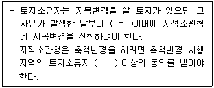
- ㄱ: 30일, ㄴ: 2분의 1
- ㄱ: 30일, ㄴ: 3분의 2
- ㄱ: 60일, ㄴ: 2분의 1
- ㄱ: 60일, ㄴ: 3분의 2
- ㄱ: 90일, ㄴ: 3분의 2
(정답률: 알수없음)
31. 공간정보의 구축 및 관리 등에 관한 법령상 지적소관청이 지적공부의 등록사항을 직권으로 조사 • 측량하여 정정할 수 있는 경우가 아닌 것은?
- 지적측량성과와 다르게 정리된 경우
- 지적공부의 작성 당시 잘못 정리된 경우
- 지적공부의 등록사항이 잘못 입력된 경우
- 합병하려는 토지의 소유자별 공유지분이 다른 경우
- 토지이동정리 결의서의 내용과 다르게 정리된 경우
(정답률: 알수없음)
32. 부동산등기법령상 등기절차에 관한 설명으로 옳은 것은?
- 법인의 합병에 따른 등기는 등기권리자와 등기의무자가 공동으로 신청하여야 한다.
- 등기의무자는 공유물을 분할하는 판결에 의한 등기를 단독으로 신청할 수 없다.
- 토지의 분할이 있는 경우에는 그 토지 소유권의 등기명의인은 그 사실이 있는 때부터 1개월 이내에 그 등기를 신청하여야 한다.
- 등기관이 직권에 의한 표시변경등기를 하였을 때에는 소유권의 등기명의인은 지체 없이 그 사실을 지적소관청에게 알려야 한다.
- 토지가 멸실된 경우에는 그 토지 소유권의 등기명의인은 그 사실이 있는 때부터 14일 이내에 그 등기를 신청하여야 한다.
(정답률: 알수없음)
33. 부동산등기법령상 권리에 관한 등기에 관한 설명으로 옳지 않은 것은?
- 지방자치단체의 부동산등기용등록번호는 국토교통부장관이 지정 • 고시한다.
- 등기관이 권리의 변경이나 경정의 등기를 할 때에는 등기상 이해관계 있는 제3자의 승낙이 없는 경우에도 부기로 하여야 한다.
- 등기관이 전세금반환채권의 일부 양도를 원인으로 한 전세권 일부이전등기를 할 때에는 양도액을 기록한다.
- 등기관이 환매특약의 등기를 할 경우 매매비용은 필요적 기록사항이다.
- 국가가 등기권리자인 경우, 등기관이 새로운 권리에 관한 등기를 마쳤을 때에는 등기필정보를 작성하여 등기권리자에게 통지하지 않아도 된다.
(정답률: 알수없음)
34. 부동산등기법령상 신탁에 관한 등기에 관한 설명으로 옳은 것을 모두 고른 것은?
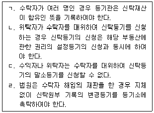
- ㄱ, ㄷ
- ㄱ, ㄹ
- ㄴ, ㄷ
- ㄱ, ㄴ, ㄹ
- ㄴ, ㄷ, ㄹ
(정답률: 알수없음)
35. 부동산등기법령상 가등기에 관한 설명으로 옳지 않은 것은?
- 가등기를 명하는 가처분명령의 관할법원은 부동산의 소재지를 관할하는 지방법원이다.
- 가등기권리자는 가등기를 명하는 법원의 가처분명령이 있을 때에는 단독으로 가등기를 신청할 수 있다.
- 가등기를 명하는 가처분명령의 신청을 각하하는 결정에 대하여는 즉시항고를 할 수 있다.
- 가등기에 의한 본등기를 한 경우 본등기의 순위는 가등기의 순위에 따른다.
- 가등기의무자는 가등기명의인의 동의 없이도 단독으로 가등기의 말소를 신청할 수 있다.
(정답률: 알수없음)
36. 동산 • 채권 등의 담보에 관한 법령상 담보등기에 관한 설명으로 옳은 것은?
- 판결에 의한 등기는 등기권리자와 등기의무자가 공동으로 신청하여야 한다.
- 등기관이 등기를 마친 경우 그 등기는 등기신청을 접수한 날의 다음 날부터 효력을 발생한다.
- 등기관의 결정에 대한 이의신청은 집행정지의 효력이 있다.
- 등기관은 자신의 결정 또는 처분에 대한 이의가 이유 없다고 인정하면 3일 이내에 의견서를 붙여 사건을 관할 지방법원에 송부하여야 한다.
- 「동산 • 채권 등의 담보에 관한 법률」에 따른 담보권의 존속기간은 7년을 초과하지 않는 기간으로 이를 갱신할 수 있다.
(정답률: 알수없음)
37. 도시 및 주거환경정비법령상 정비계획 입안을 위하여 주민의견 청취절차를 거쳐야 하는 경우는? (단, 조례는 고려하지 않음)
- 공동이용시설 설치계획을 변경하는 경우
- 재난방지에 관한 계획을 변경하는 경우
- 정비사업시행 예정시기를 3년의 범위에서 조정하는 경우
- 건축물의 최고 높이를 변경하는 경우
- 건축물의 용적률을 20퍼센트 미만의 범위에서 확대하는 경우
(정답률: 알수없음)
38. 도시 및 주거환경정비법령상 조합설립추진위원회(이하 '추진위원회')에 관한 설명으로 옳지 않은 것은?
- 국토교통부장관은 추진위원회의 공정한 운영을 위하여 추진위원회의 운영규정을 정하여 고시하여야 한다.
- 추진위원회는 운영규정에 따라 운영하여야 하며, 토지등소유자는 운영에 필요한 경비를 운영규정에 따라 납부하여야 한다.
- 추진위원회는 사용경비를 기재한 회계장부 및 관계 서류를 조합설립인가일부터 30일 이내에 조합에 인계하여야 한다.
- 추진위원회는 조합설립에 필요한 동의를 받기 전에 추정분담금 등 대통령령으로 정하는 정보를 토지등소유자에게 제공하여야 한다.
- 조합이 시행하는 재건축사업에서 추진위원회가 추진위원회 승인일부터 1년이 되는 날까지 조합설립인가를 신청하지 아니하는 경우에는 정비구역의 지정 권자는 정비구역등을 해제하여야 한다.
(정답률: 알수없음)
39. 도시 및 주거환경정비법령상 다음 설명에 해당하는 사업은?
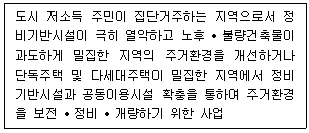
- 도시재개발사업
- 주택재건축사업
- 가로주택정비사업
- 주거환경개선사업
- 도시재생사업
(정답률: 알수없음)
40. 도시 및 주거환경정비법령상 정비기반시설이 아닌 것을 모두 고른 것은? (단, 주거환경개선사업을 위하여 지정 • 고시된 정비구역이 아님)
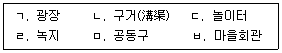
- ㄱ, ㄴ
- ㄴ, ㄷ
- ㄷ, ㅂ
- ㄹ, ㅁ
- ㅁ, ㅂ
(정답률: 알수없음)
2과목: 회계학
41. 유용한 재무정보의 질적특성에 관한 설명으로 옳은 것은?
- 근본적 질적특성은 목적적합성과 검증가능성이다.
- 목적적합한 재무정보는 이용자들의 의사결정에 차이가 나도록 할 수 있다.
- 보고기간이 지난 정보는 더 이상 적시성을 갖지 않는다.
- 정보가 비교가능하기 위해서는 비슷한 것은 다르게 보여야 하고 다른 것은 비슷하게 보여야 한다.
- 표현충실성에서 오류가 없다는 것은 모든 면에서 완벽하게 정확하다는 것을 의미한다.
(정답률: 알수없음)
42. 현금및현금성자산으로 재무상태표에 표시될 수 없는 것을 모두 고른 것은? (단, 지분상품은 현금으로 전환이 용이하다.)
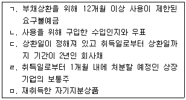
- ㄱ, ㄴ, ㄹ
- ㄱ, ㄷ, ㄹ
- ㄴ, ㄷ, ㅁ
- ㄱ, ㄴ, ㄷ, ㄹ
- ㄱ, ㄴ, ㄷ, ㄹ, ㅁ
(정답률: 알수없음)
43. 공정가치 측정에 관한 설명으로 옳지 않은 것은?
- 공정가치란 측정일에 시장참여자 사이의 정상거래에서 자산을 매도할 때 받거나 부채를 이전할 때 지급하게 될 가격이다.
- 공정가치는 시장에 근거한 측정치이며 기업 특유의 측정치가 아니다.
- 공정가치를 측정하기 위해 사용하는 가치평가기법은 관측할 수 있는 투입변수를 최소한으로 사용하고 관측할 수 없는 투입변수를 최대한으로 사용한다.
- 기업은 시장참여자가 경제적으로 최선의 행동을 한다는 가정 하에, 시장참여자가 자산이나 부채의 가격을 결정할 때 사용할 가정에 근거하여 자산이나 부채의 공정가치를 측정하여야 한다.
- 비금융자산의 공정가치를 측정할 때는 자신이 그 자산을 최고 최선으로 사용하거나 최고 최선으로 사용할 다른 시장참여자에게 그 자산을 매도함으로써 경제적 효익을 창출할 수 있는 시장참여자의 능력을 고려한다.
(정답률: 알수없음)
44. (주)감평은 20x1년 중 공정가치선택권을 적용한 당기손익-공정가치 측정 금융부채 \80,000을 최초 인식하였다. 20x1년 말 해당 금융부채의 공정가치는 \65,000으로 하락하였다. 공정가치 변동 중 \5,000은 (주)감평의 신용위험 변동으로 발생한 것이다. 해당 금융부채로 인해 (주)감평의 20x1년 당기순이익에 미치는 영향은? (단, (주)감평의 신용위험 변동은 당기손익의 회계불일치를 일으키거나 확대하지는 않는다.)
- \10,000 감소
- \5,000 감소
- 영향없음
- \5,000증가
- \10,000 증가
(정답률: 알수없음)
45. 다음의 특징을 모두 가지고 있는 자산은?
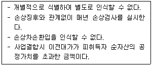
- 특허권
- 회원권
- 영업권
- 라이선스
- 가상화폐
(정답률: 알수없음)
46. (주)감평은 20x1년 초 해지불능 리스계약을 체결하고 사용권자산(내용연수 5년, 잔존가치 \0 , 정액법 상각)과 리스부채(리스기간 5년, 매년 말 정기리스료 \13,870, 리스기간 종료 후 소유권 무상이전 약정)를 각각 \50,000씩 인식하였다. 리스계약의 내재이자율은 연 12%이고 (주)감평은 리스회사의 내재이자율을 알고 있다. (주)감평은 사용권자산에 대해 재평가모형을 적용하고 있으며 20x1년 말 사용권자산의 공정가치는 \35,000이다. 동 리스계약이 (주)감평의 20x1년 당기순이익에 미치는 영향은? (단, 리스계약은 소액자산리스 및 단기리스가 아니라고 가정한다.)
- \5,000 감소
- \6,000 감소
- \15,000 감소
- \16,000 감소
- \21,000 감소
(정답률: 알수없음)
47. (주)감평의 20x1년 중 발생한 자본항목 사건이다.
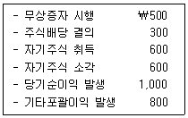
20x1년 초 (주)감평의 자본은 \10,000이고 이 외에 자본항목 사건은 없다고 가정할 때, 20x1년 말 (주)감평의 자본은?
- 쀼10,400
- \l1,000
- 쀼11,200
- \l1,600
- 쀼11,800
(정답률: 알수없음)
48. (주)감평은 20x1년부터 제품판매 \5당 포인트 1점을 고객에게 제공하는 고객충성제도를 운영하고 제품판매 대가로 \10,000을 수취하였다. 포인트는 20x2년부터 (주)감평의 제품을 구매할 때 사용할 수 있으며 포인트 이행약속은 (주)감평의 중요한 수행의무이다. (주)감평은 포인트 1점당 \0.7으로 측정하고, 20x1년 부여된 포인트 중 75%가 사용될 것으로 예상하여 포인트의 개별 판매가격을 추정하였다. 포인트가 없을 때 20x1년 제품의 개별 판매가격은 \9,450이다. 상대적 개별 판매가격에 기초하여 (주)감평이 판매대가 \10,000을 수행의무에 배분하는 경우, 20x1년 말 재무상태표에 인식할 포인트 관련 이연수익(부채)은?
- \1,000
- \1,⑤0
- \1,450
- \1,550
- \2,000
(정답률: 알수없음)
49. (주)감평은 20x1년 초 액면금액 \100,000인 전환상환우선주(액면배당을 연 2%, 매년 말 배당지급)를 액면발행 하였다. 전환상환우선주 발행시 조달한 현금 중 금융부채요소의 현재가치는 \80,000이고 나머지는 자본요소(전환권)이다. 전환상환 우선주 발행시점의 금융부채요소 유효이자율은 연 10%이다. 20x2년 초 전환상환 우선주의 40%를 보통주로 전환할 때, (주)감평 의 자본증가액은?
- \32,000
- \34,400
- \40,000
- \42,400
- \50,000
(정답률: 알수없음)
50. (주)감평의 기말재고자산에 포함시켜야 할 항목을 모두 고른 것은?
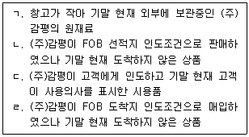
- ㄱ
- ㄷ
- ㄱ, ㄴ
- ㄴ, ㄹ
- ㄷ, ㄹ
(정답률: 알수없음)
51. 고객과의 계약에서 생기는 수익에 관한 설명으로 옳지 않은 것은?
- 거래가격을 산정하기 위해서는 계약 조건과 기업의 사업 관행을 참고하며, 거래가격에는 제삼자를 대신해서 회수한 금액은 제외한다.
- 고객과의 계약에서 약속한 대가는 고정금액, 변동금액 또는 둘 다를 포함할 수 있다.
- 변동대가의 추정이 가능한 경우, 계약에서 가능한 결과치가 두 가지뿐일 경우에는 기댓값이 변동대가의 적절한 추정치가 될 수 있다.
- 기업이 받을 권리를 갖게 될 변동대가(금액)에 미치는 불확실성의 영향을 추정할 때에는 그 계약 전체에 하나의 방법을 일관되게 적용한다.
- 고객에게서 받은 대가의 일부나 전부를 고객에게 환불할 것으로 예상하는 경우에는 환불부채를 인식한다.
(정답률: 알수없음)
52. 투자부동산에 관한 설명으로 옳지 않은 것은?
- 소유 투자부동산은 최초 인식시점에 원가로 측정한다.
- 투자부동산을 후불조건으로 취득하는 경우의 원가는 취득시점의 현금가격상당액으로 한다.
- 투자부동산의 평가방법으로 공정가치모형을 선택한 경우, 감가상각을 수행하지 아니한다.
- 공정가치로 평가하게 될 자가건설 투자부동산의 건설이나 개발이 완료되면 해당일의 공정가치와 기존 장부금액의 차액은 기타포괄손익으로 인식한다.
- 재고자산을 공정가치로 평가하는 투자부동산으로 대체하는 경우, 재고자산의 장부금액과 대체시점의 공정가치의 차액은 당기손익으로 인식한다.
(정답률: 알수없음)
53. 재무제표의 표시에 관한 설명으로 옳지 않은 것은?
- 재무제표가 한국채택국제회계기준의 요구사항을 모두 충족한 경우가 아니라면 한국채택국제회계기준을 준수하여 작성되었다고 기재하여서는 안 된다.
- 기업이 재무상태표에 유동자산과 비유동자산으로 구분하여 표시하는 경우, 이연법인세자산은 유동자산으로 분류하지 아니한다.
- 비용을 기능별로 분류하는 기업은 감가상각비, 기타 상각비와 종업원급여비용을 포함하여 비용의 성격에 대한 추가 정보를 공시한다.
- 수익과 비용의 어느 항목은 포괄손익계산서 또는 주석에 특별손익항목으로 별도 표시한다.
- 매출채권에 대한 대손충당금을 차감하여 관련 자산을 순액으로 측정하는 것은 상계표시에 해당하지 아니한다.
(정답률: 알수없음)
54. (주)감평은 20x1년 초 기계장치(취득원가 \1,000,000, 내용연수 5년, 잔존가치\50,000, 정액법 상각)를 구입하고, 원가모형을 적용하였다. 20x4년 초 (주)감평은 기계장치의 내용연수를 당초 5년에서 7년으로, 잔존가치도 변경하였다. (주)감평이 20x4년에 인식한 감가상각비가 \100,000인 경우, 기계장치의 변경된 잔존가치는?
- \20,000
- \30,000
- \50,000
- \70,000
- \130,000
(정답률: 알수없음)
55. (주)감평의 20x1년도 상품 매입과 관련된 자료이다. 20x1년도 상품 매입원가는? (단, (주)감평은 부가가치세 과세사업자이며, 부가가치세는 환급대상에 속하는 매입세 액이다.)
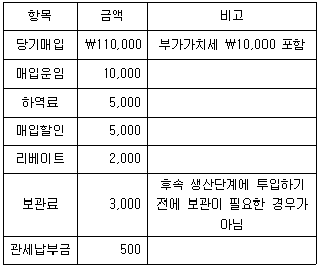
- \108,500
- \110,300
- \110,500
- \113,500
- \123,500
(정답률: 알수없음)
56. (주)감평은 20x1년 초 기계장치(내용연수 3년, 잔존가치 \0, 정액법 상각)를 구입과 동시에 무이자부 약속어음(액면금액 \300,000, 3년 만기, 매년 말 \100,000 균등상환)을 발행하여 지급하였다. 이 거래 당시 (주)감평이 발행한 어음의 유효이자율은 연 12%이다. 기계장치에 대해 원가모형을 적용하고, 당해 차입원가는 자본화대상에 해당하지 않는다. 20x1년 (주)감평이 인식할 비용은? (단, 12%, 3기간의 연금현가계수는 2.40183이고, 계산금액은 소수점 첫째자리에서 반올림하며, 단수차이로 인한 오차가 있으면 가장 근사치를 선택한다.)
- \59,817
- \80,061
- \88,639
- \108,883
- \128,822
(정답률: 알수없음)
57. (주)감평의 20x1년 초 유통보통주식수는 18,400주이다. (주)감평은 20x1년 7월 초 주주우선배정 방식으로 유상증자를 실시하였다. 유상증자 권리행사 전일의 공정가치는 주당 \50,000이고, 유상증자 시의 주당 발행금액은 \40,000, 발행주식수는 2,000주이다. (주)감평은 20x1년 9월 초 자기주식을 1,500주 취득하였다. (주)감평의 20x1년 가중평균유통보통주식수는? (단, 가중평균유통보통주식 수는 월할 계산한다.)
- 18,667주
- 19,084주
- 19,268주
- 19,400주
- 20,400주
(정답률: 알수없음)
58. (주)감평이 20x1년 말 재무상태표에 계상하여야 할 충당부채는? (단, 아래에서 제시된 금액은 모두 신뢰성 있게 측정되었다.)
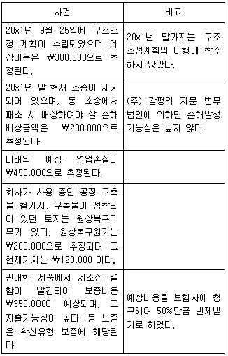
- \295,000
- \470,000
- \550,000
- \670,000
- \920,000
(정답률: 알수없음)
59. 20x1년 초 설립한 (주)감평의 법인세 관련 자료이다. (주)감평의 20x1년도 유효법 인세율은? (단, 유효법 인세율은 법 인세비용을 법 인세 비용차감전순이익으로 나눈 값으로 정의한다.)
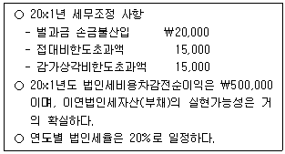
- 19.27%
- 20%
- 21.4%
- 22%
- 22.8%
(정답률: 알수없음)
60. (주)감평은 20x1년 중 연구개발비를 다음과 같이 지출하였다.
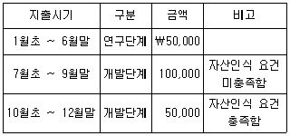
(주)감평은 20x2년 말까지 \100,000을 추가 지출하고 개발을 완료하였다. 무형자산으로 인식한 개발비(내용연수 10년, 잔존가치 \0, 정액법 상각)는 20x3년 1월 1일부터 사용이 가능하며, 원가모형을 적용한다. 20x3년 말 현재 개발비가 손상징후를 보였으며 회수가능액은 \80,000이다. 20x3년 인식할 개발비 손상차손은?
- \50,000
- \50,500
- \53,750
- \55,000
- \70,000
(정답률: 알수없음)
61. 고객과의 계약으로 식별하기 위한 기준에 관한 설명으로 옳지 않은 것은?
- 계약 당사자들이 계약을 서면으로, 구두로 또는 그 밖의 사업 관행에 따라 승인하고 각자의 의무를 수행하기로 확약한다.
- 이전할 재화나 용역과 관련된 각 당사자의 권리를 식별할 수 있다.
- 이전할 재화나 용역의 지급조건을 식별할 수 있다.
- 계약에 상업적 실질을 요하지는 않는다.
- 고객에게 이전할 재화나 용역에 대하여 받을 권리를 갖게 될 대가의 회수 가능성이 높다.
(정답률: 알수없음)
62. 다음 항목과 계정 분류를 연결한 것으로 옳지 않은 것은?
- 직접 소유 또는 금융리스를 통해 보유하고 운용리스로 제공하고 있는 건물 - 재고자산
- 소유 자가사용부동산 - 유형자산
- 처분예정인 자가사용부동산 - 매각예정비유동자산
- 통상적인 영업과정에서 판매하기 위한 부동산이나 이를 위하여 건설 또는 개발 중인 부동산 - 재고자산
- 장래 용도를 결정하지 못한 채로 보유하고 있는 토지 - 투자부동산
(정답률: 알수없음)
63. 공기청정기를 위탁판매하고 있는 (주)감평은 20x1년 초 공기청정기 10대(대당 판매가격 \1,000, 대당 원가 \700)를 (주)한국에 적송하였으며, 운송업체에 총운송비용 \100을 현금으로 지급하였다. (주)한국은 위탁받은 공기청정기 10대 중 7대를 20x1년에 판매하였다. 20x1년 위탁판매와 관련하여 (주)감평이 인식할 매출원가는?
- \4,970
- \5,700
- \7,070
- \8,100
- \10,100
(정답률: 알수없음)
64. (주)감평은 20x1년 초 종업원 100명에게 현금결제형 주가차액보상권을 각각 20개씩 부여하고 2년간의 용역제공조건을 부과하였다. (주)감평은 20x1년에 \6,000, 20x2년에 \6,500을 주식보상비용으로 인식하였다. 20x1년 초부터 20x2년 말까지 30명의 종업원이 퇴사하였으며, 20x3년 말 종업원 10명이 권리를 행사하였다. 20x3년 말 현금결제형 주가차액보상권의 개당 공정가치는 \15, 개당 내재가치는 \10이라고 할 때, (주)감평이 20x3년 인식할 주식보상비용은?
- \5,500
- \6,000
- \7,000
- \7,500
- \8,500
(정답률: 알수없음)
65. (주)감평은 20x1년 초 주당 액면금액이 \150인 (주)한국의 보통주 20주를 주당 \180에 취득하였고, 총거래원가 \150을 지급하였다. (주)감평은 동 주식을 기타포괄손익-공정가치 측정 금융자산으로 분류하였고 20x1년 말 동 주식의 공정가치는 주당 \240이다. 동 금융자산과 관련하여 20x1년 인식할 기타포괄이익은?
- \1,⑤0
- \1,200
- \1,350
- \1,600
- \1,950
(정답률: 알수없음)
66. (주)감평의 20x2년 발생주의 수익과 비용은 각각 \1,500과 \600이며, 관련 자산과 부채는 다음과 같다.
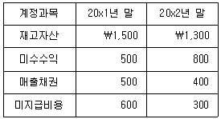
20x2년 순현금흐름(현금유입액-현금유출액)은?
- (-)\800
- (-)\700
- (+)\300
- (+)\400
- (+)\600
(정답률: 알수없음)
67. (주)감평은 재고자산을 20x1년 말까지 평균법을 적용해 오다가 20x2년 초 선입선출법으로 회계정책을 변경하였다. 다음은 20x1년 말과 20x2년 말의 평가방법별 재고자산 금액이다.
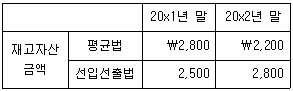
평균법을 적용한 20x2년 당기순이익이 \2,000일 때, 변경 후 20x2년 당기순이익은? (단, 동 회계정책 변경은 한국채택국제회계기준에서 제시하는 조건을 충족하는 것이며, 선입선출법으로의 회계정책 변경에 대한 소급효과를 모두 결정할 수 있다고 가정한다.)
- \1,400
- \2,000
- \2,300
- \2,600
- \2,900
(정답률: 알수없음)
68. (주)감평은 취득원가 \2,500(처분당시 장부금액은 \1,500, 원가모형 적용)인 기계장치를 20x1년 초 \1,600에 처분하였다. (주)감평은 기계장치 장부금액을 제거하지 않고 처분대가를 잡수익으로 처리하고, 20x1년과 20x2년 각각 취득원가의 10%를 감가상각비로 계상하였다. 이러한 오류는 20x3년 초 발견되었고, 20x2년도의 장부가 마감되었다면, (주)감평의 20x3년 당기순이익에 미치는 영향은? (단, 상기 오류는 오류의 영향이나 오류의 누적효과를 실무적으로 결정할 수 있으며 중요한 오류에 해당한다.)
- 영향없음
- \100 증가
- \250 증가
- \500 증가
- \600 증가
(정답률: 알수없음)
69. (주)감평이 사용하는 기계장치의 20x1년 말 장부금액은 \3,500(취득원가 \6,000, 감가상각누계액 \2,500, 원가모형 적용)이다. 20x1년 말 동 기계장치의 진부화로 가치가 감소하여 순공정가치는 \1,200, 사용가치는 \1,800으로 추정되었다. (주)감평이 20x1년 인식할 기계장치 손상차손은?
- \1,200
- \1,700
- \1,800
- \2,000
- \2,300
(정답률: 알수없음)
70. (주)감평은 20x1년 2월 초 영업을 개시하여 2년간 제품보증 조건으로 건조기(대당 판매가격 \100)를 판매하고 있다. 20x1년 1,500대, 20x2년 4,000대의 건조기를 판매하였으며, 동종업계의 과거 경험에 따라 판매수량 대비 평균 3%의 보증요청이 있을 것으로 추정되고 보증비용은 대당 평균 \20이 소요된다. 당사가 제공하는 보증은 확신유형의 보증이며 연도별 보증이행 현황은 다음과 같다.
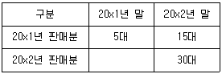
20x2년 말 보증손실충당부채는? (단, 보증요청의 발생가능성이 높고 금액은 신뢰성 있게 측정되었다. 충당부채의 현재가치요소는 고려하지 않는다.)
- \800
- \1,000
- \1,200
- \1,800
- \2,300
(정답률: 알수없음)
71. 원가관리기법에 관한 설명으로 옳은 것은?
- 제약이론을 원가관리에 적용한 재료처리량공헌이익(throughput contribution)은 매출액에서 기본원가를 차감하여 계산한다.
- 수명주기원가계산에서는 공장자동화가 이루어지면서 제조이전단계보다는 제조단계에서의 원가절감 여지가 매우 높아졌다고 본다.
- 목표원가계산은 표준원가와 마찬가지로 제조과정에서의 원가절감을 강조한다.
- 균형성과표는 전략의 구체화와 의사소통에 초점이 맞춰진 제도이다.
- 품질원가계산에서는 내부실패원가와 외부실패원가를 통제원가라 하며, 예방 및 평가활동을 통해 이를 절감할 수 있다.
(정답률: 알수없음)
72. (주)감평은 단일 제품을 대량생산하고 있으며, 가중평균법을 적용하여 종합원가계산을 하고 있다. 직접재료는 공정초에 전량 투입되고, 전환원가는 공정 전체에서 균등하게 발생한다. 당기 원가계산 자료는 다음과 같다.
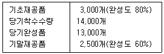
품질검사는 완성도 70%에서 이루어지며, 당기 중 검사를 통과한 합격품의 10%를 정상공손으로 간주한다. 직접재료원가와 전환원가의 완성품환산량 단위당 원가는 각각 \30과 \20이다. 완성품에 배부되는 정상공손원가는?
- \35,000
- \44,000
- \55,400
- \57,200
- \66,000
(정답률: 알수없음)
73. (주)감평은 제품라인 A, B, C부문을 유지하고 있다. 20x1년 각 부문별 손익계산서는 다음과 같다.
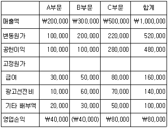
(주)감평의 경영자는 B부문의 폐쇄를 결정하기 위하여 각 부문에 관한 자료를 수집한 결과 다음과 같이 나타났다.
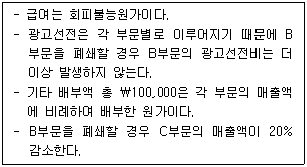
(주)감평이 B부문을 폐쇄할 경우 (주)감평 전체 이익의 감소액은? (단, 재고자산은 없다.)
- \36,000
- 쀼46,0)0
- \66,000
- \86,000
- \96,000
(정답률: 알수없음)
74. (주)감평은 표준원가제도를 도입하고 있다. 변동제조간접원가의 배부기준은 직접노무시간이며, 제품 1개를 생산하는데 소요되는 표준직접노무시간은 2시간이다. 20x1년 3월 실제 발생한 직접노무시간은 10,400시간이고, 원가자료는 다음과 같다.
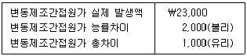
(주)감평의 20x1년 3월 실제 제품생산량은?
- 4,600개
- 4,800개
- 5,000개
- 5,200개
- 5,400개
(정답률: 알수없음)
75. (주)감평의 생산량 관련범위 내에 해당하는 원가 자료는 다음과 같다. ( )에 들어갈 금액으로 옳지 않은 것은?
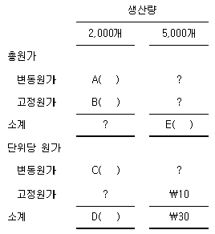
- A: \40,000
- B: \50,000
- C: \20
- D: \45
- E: \90,000
(정답률: 알수없음)
76. (주)감평은 제조간접원가를 기계작업시간 기준으로 예정배부하고 있다. 20x1년 실제 기계작업시간은?
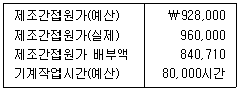
- 70,⑤9시간
- 71,125시간
- 72,475시간
- 73,039시간
- 74,257시간
(정답률: 알수없음)
77. (주)감평이 20x2년 재무제표를 분석한 결과 전부원가계산보다 변동원가계산의 영업 이익이 \30,000 더 많았다. 20x2년 기초재고수량은? (단, 20x1년과 20x2년의 생산 • 판매활동 자료는 동일하고, 선입선출법을 적용하며, 재공품은 없다.)
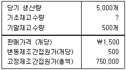
- 580개
- 620개
- 660개
- 700개
- 740개
(정답률: 알수없음)
78. (주)감평의 20x1년 매출 및 원가자료는 다음과 같다.
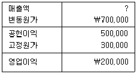
20x2년에는 판매량이 20% 증가할 것으로 예상된다. (주)감평의 20x2년 예상영업이익은? (단, 판매량 이외의 다른 조건은 20x1년과 동일하다.)
- \260,000
- \280,000
- \300,000
- \340,000
- \380,000
(정답률: 알수없음)
79. (주)감평은 제품A와 제품B를 생산 • 판매하고 있다. 20x1년 (주)감평의 매출액과 영업이익은 각각 \15,000,000과 \3,000,000이며, 고정원가는 \2,250,000이다. 제품A와 제품B의 매출배합비율이 각각 25%와 75%이며, 제품A의 공헌이익률은 23%이다. 제품B의 공헌이익률은?
- 29.25%
- 34.4%
- 35%
- 37.4%
- 39%
(정답률: 알수없음)
80. (주)감평은 평균영업용자산과 영업이익을 이용하여 투자수익률(ROI)과 잔여이익(RI)을 산출하고 있다. (주)감평의 20x1년 평균영업용자산은 \2,500,000이며, ROI는 10%이다. (주)감평의 20x1년 ROI가 \25,000이라면 최저필수수익률은?
- 8%
- 9%
- 10%
- 11%
- 12%
(정답률: 알수없음)